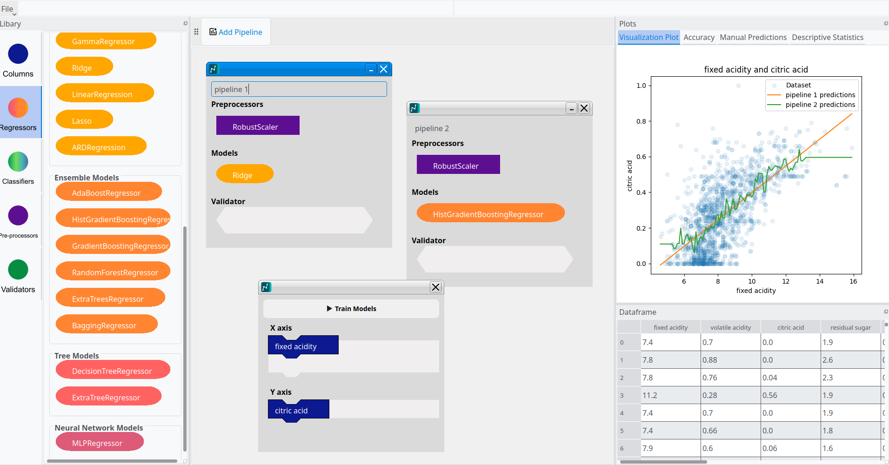
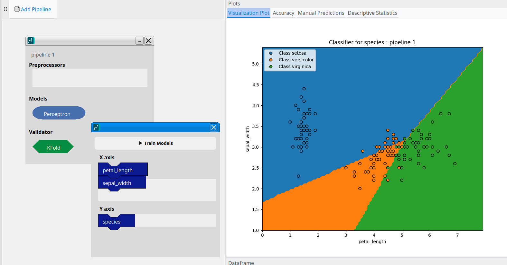
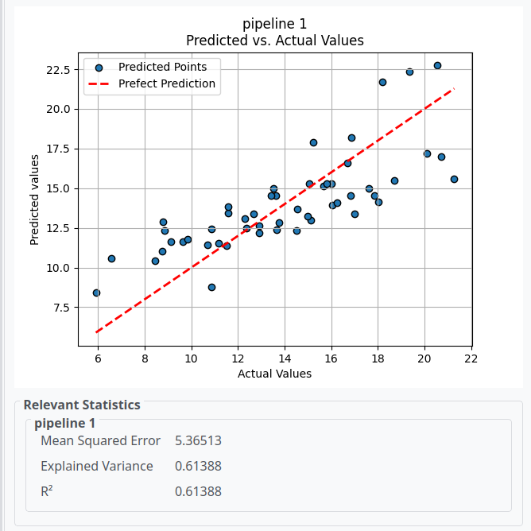
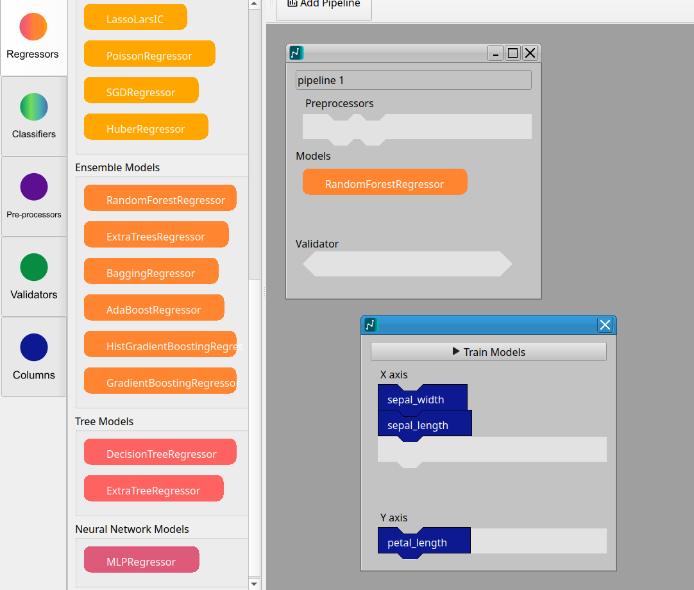
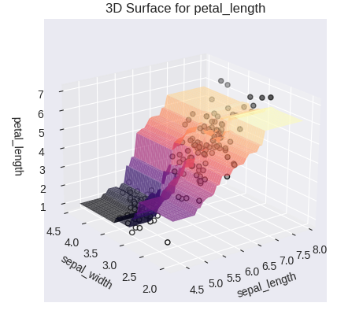
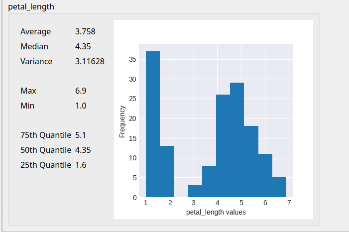
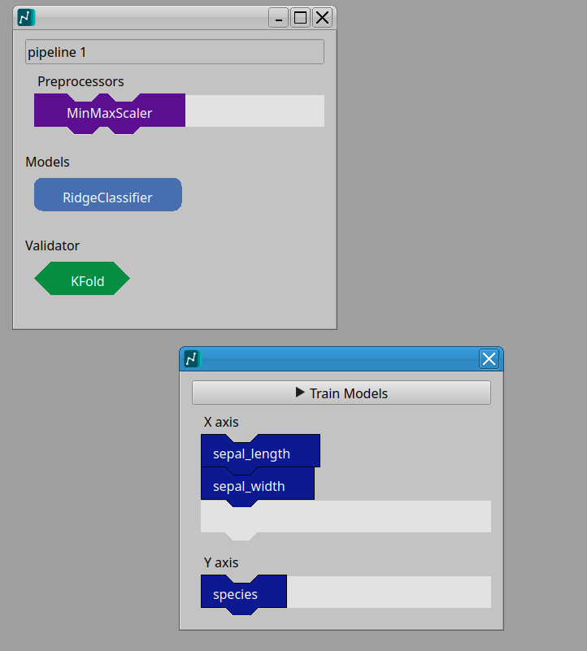

A "scratch-like" AI model building software.
Get Started v1.0.0Our software removes the steep learning curve of traditional coding. By using intuitive drag-and-drop blocks, you can construct complex AI pipelines visually.
DataScratch is free to use and open to everyone. We believe AI literacy shouldn't be hidden behind a paywall. Because we are open source, you can inspect the code, contribute new pull requests, or build it yourself. You’re not just using a tool; you’re joining a community dedicated to democratizing artificial intelligence.
Stop squinting at syntax errors and start seeing the big picture. DataScratch transforms abstract algorithms into tangible visual flows, giving you instant feedback on how data moves through your model. Whether you're building your first classifier or a complex neural network, you'll learn AI and data science concepts through experimentation rather than memorization.
Latest Stable Version: 1.2.0 (LTS)